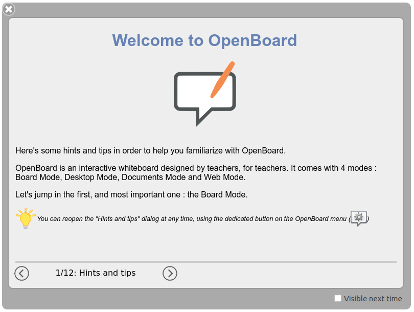

OpenBoard is user-friendly software, but it is extensive, and it takes time to master all its aspects.
Here are some tips to help you get started.
The first time you launch OpenBoard, a window opens to welcome you and introduce the software. Take the time to read the various pages, which will help you get familiar with the software!
You can reopen this window at any time through the "Tips and Tricks" button in the OpenBoard menu located at the top right of the application.

You will also find documentation on this website, presenting OpenBoard and its features. Feel free to take a look by clicking here!
If you haven't found the help you're looking for in the above, you can ask a question on the GitHub platform to get help from the OpenBoard community: follow this link.
Remember that GitHub is an international platform, where many nationalities participate. The language used for communication is English, so that everyone can benefit from your exchanges!